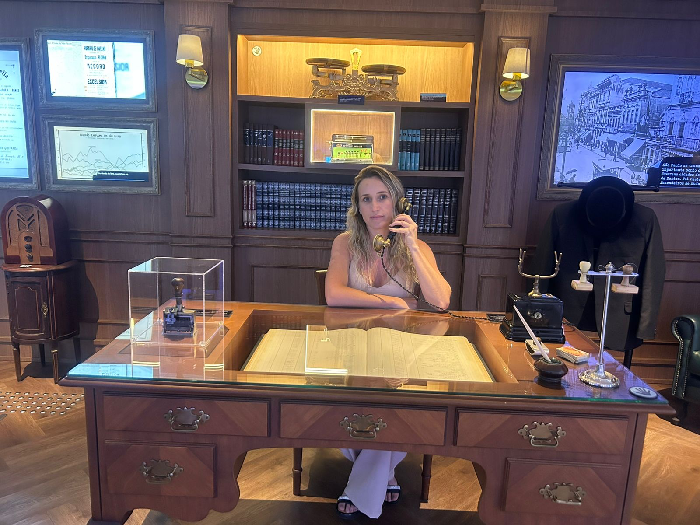
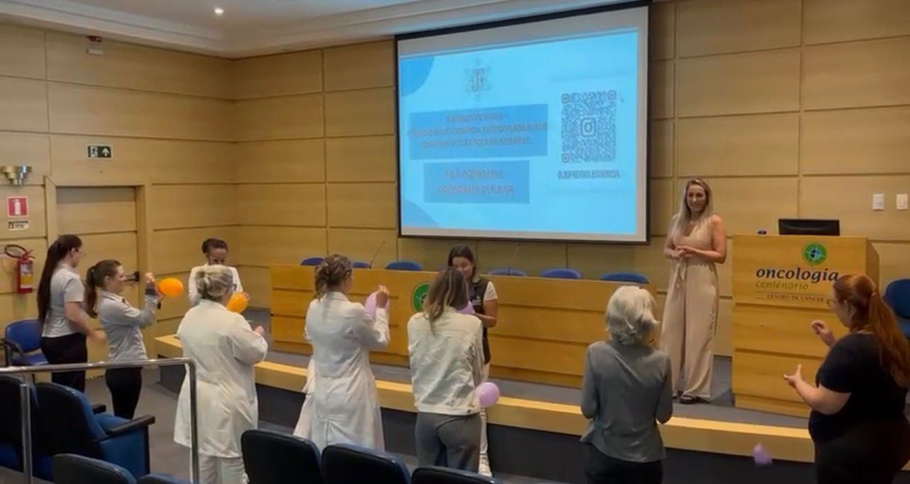
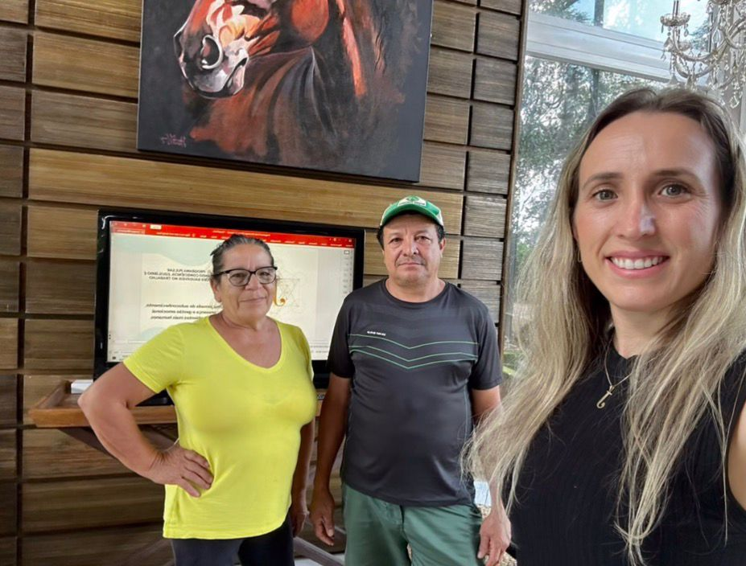

Transformando relações, comunicação e bem-estar.
Porque saúde emocional também é produtividade.

Uma jornada de transformação humana
Sou Juliana Freitas, psicoterapeuta e facilitadora de desenvolvimento humano. Minha trajetória nasceu da escuta profunda das relações humanas e da convicção de que saúde emocional, comunicação e consciência transformam pessoas, equipes e ambientes.
Ao longo da minha prática, desenvolvi uma abordagem que integra acolhimento, percepção relacional e processos de transformação aplicados à vida pessoal e profissional.
Sou a criadora do Programa PULSAR,uma iniciativa voltada ao fortalecimento das relações, da comunicação e do bem-estar emocional em equipes, empresas e contextos institucionais.
O Programa Pulsar atua em ambientes onde pessoas cuidam de pessoas, trabalham com pessoas e lideram pessoas.
Fortalecimento da saúde emocional dos servidores e qualificação das relações no serviço público. Práticas que contribuem para ambientes mais colaborativos e funcionais.
Cuidado emocional de quem cuida. Ações voltadas ao manejo do estresse, fortalecimento dos vínculos e melhoria da comunicação entre equipes de saúde.
Apoio emocional a educadores, gestores e equipes pedagógicas. Vivências que favorecem relações mais saudáveis, escuta qualificada e manejo das demandas do cotidiano escolar.
Fortalecimento das relações de trabalho, redução de ruídos e desenvolvimento da comunicação emocional. O Pulsar contribui para equipes mais conscientes, ambientes mais saudáveis e resultados mais sustentáveis.
Fortalecimento de vínculos e sustentação emocional de equipes que atuam em contextos de alta entrega humana. Práticas que ampliam presença, escuta e cooperação em projetos sociais e organizações do terceiro setor.
Nossa metodologia em 3 passos simples.
Mapeamento do contexto emocional e relacional da equipe por meio de questionário anônimo e escuta com lideranças.
Desenvolvimento de vivências, palestras ou encontros alinhados aos desafios reais identificados no diagnóstico.
Aplicação de práticas que fortalecem comunicação, vínculos, consciência emocional e integração entre as pessoas.
O Programa Pulsar já vem sendo aplicado em contextos reais, fortalecendo relações, comunicação e saúde emocional em ambientes de alta demanda humana. Oncologia Centenário Projeto-piloto desenvolvido com a equipe da oncologia, com foco em descompressão emocional de profissionais que atuam em contexto de alta exigência humana. A proposta favorece alívio de tensões acumuladas, fortalecimento dos vínculos e qualificação das relações no ambiente de trabalho.

Equipe de colaboradores em Passo Fundo Vivência aplicada com foco na comunicação interpessoal, integração da equipe e fortalecimento das relações de trabalho no cotidiano organizacional.

Um programa inovador para transformar a dinâmica de equipes através do autoconhecimento.